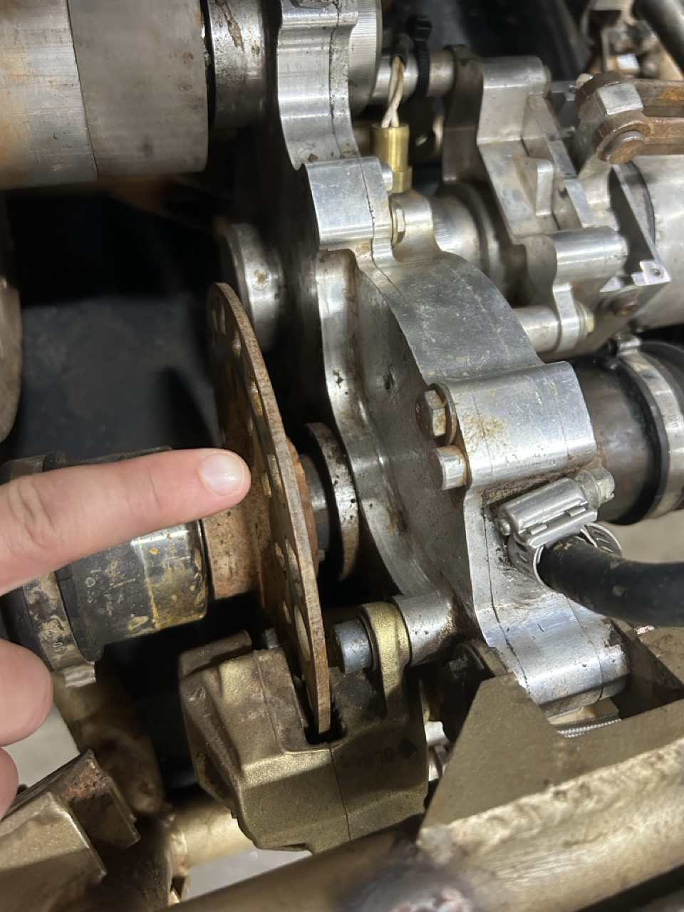
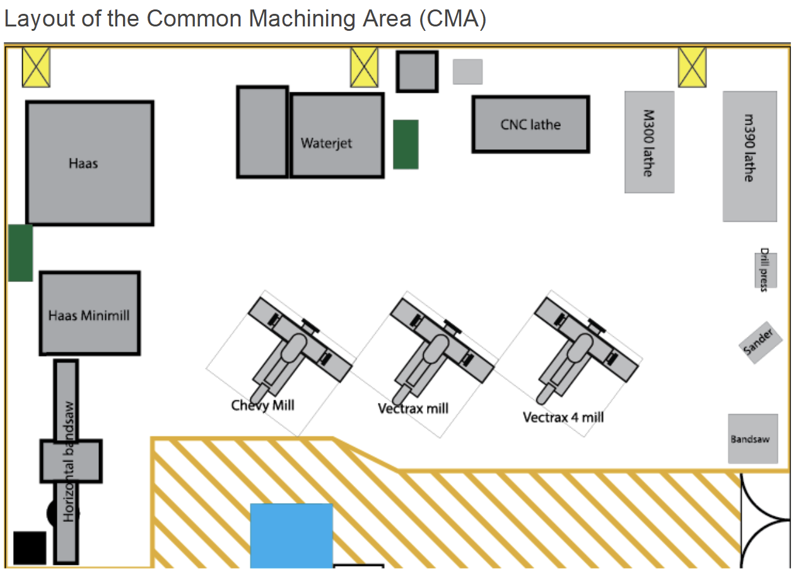

GT Off-Road
Arihant Gadgade
Date Published: Oct 8, 2025
Contents
1. Overview 🔝
I joined GTOR as a way to learn and have hands-on experience with engineering. In this article I will outline different projects I worked on and things I learned. I joined GTOR because it was one of the smaller car clubs, so I would get more work to do, unlike the larger car clubs where I would potentially be siloed off.
1.1. Resources 🔝
History of Cars
The Secret Life of the Car
The History of American Vehicles
How a Car Works
Playlist: Vintage "How Cars" Work Films
Machining
Open Source Machine Tools
2. Fall 2025 🔝
This section will document some of the different projects I worked on, some of the manufacturing I did, and some of the trainings I took.
2.1. Projects 🔝
These are projects I worked on
- chronologically listed
- lots of these are parallelized and have multiple dependencies
- note: I did have help on some of these projects, either because I
didn't have access to a tool or bc I needed the experienced help
Dacq Box:
This is a box for the data acquisiton team that's to be mounted
on to the car. The dacq box just houses the
microcontroller used for gathering data from the various sensors. I just made
an initial prototype for them, multiple iterations will come later.
Hall Effect Sensor Bracket:
This will be a bracket on the car that uses a hall effect sensor to get
rpm data for the brake plate.

Test Rig:
First I built a test rig for the hall effect sensor, so the dacq
team can test the sensors and get data without needing to drive the cars.
It's essentially a mount for a motor and a hall effect sensor,
so that we can get properly calibrated data.
The bracket will come later.
Multi-Clutch:
GMP Friction Product: High Friction Clutch Discs
Still in the works, will update later.
2.2. Manufacturing 🔝
In this section I'll show some manufacturing I worked on. I tried to help out with as much manufacturing as possible, and the manufacturing lead helped teach me different machines.
Common Machining Area:
Here's the Common Machining Area, where manufacturing takes place:

The machines I used are diagrammed in this bird's eye view of the CMA.
Manufacturing Wheel Hubs:
I buddied the manufacturing lead while making these hubs.
I learned how to use the Haas CNC mill as well as learning how to
use Computer-Aided Manufacturing (CAM) software (Fusion in our case)
to generate g-code for the CNC mill.
Lathing:
Helped lathe parts for different members on the team. Here's
an example of an insert for uprights that will be used in suspension.
2.3. PI Training 🔝
I did the Prototyping Instructor Training at the
Invention Studio.
Here I learned how to use various machines and tools. This was useful for GTOR
as the trainings for the CMA are much more bottlenecked by training requirements
and trainers.
Also included is casting training, as you can get trained on various other
tools and equipment.
Note:
- GTOR is located in the SCC (Student Competition Center)
- Invention Studio is in another building on campus
- Training certifications are not mutually recognized, I'm doing
it for the knowledge and skills. Also if I bring material to the
Invention Studio I can use the tools there to manufacture and bring
the finished piece back to the SCC if necessary.
Metalroom:
First we used the waterjet to cut out the GT logo from aluminum sheet metal,
then we used tools in the rest of the Metal Room to create the finalized
product.
Casting:
Here's me training on casting. Used pewter to sand cast a
small disk.